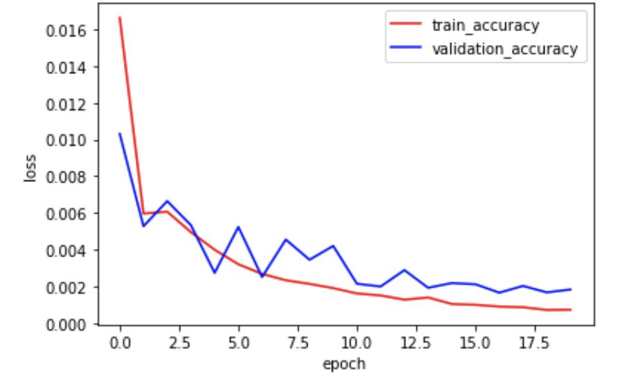

The dataset I use for this project is from IMM Face Database. It contains 240 facial images of 40 person with 6 images from different viewpoints for everyone. For every image, 58 facial key points are labeled. To start with, we only consider the key point 53 which is for nose tip.
First, I tried to load first 192 images and their corresponding key points into training dataloader and load last 48 images and their corresponding key points into validation dataloader. Below are some examples of training images with nose tip key point shown on it.
I create a CNN model with input size 80*60, output size 2 and conbination of layers in the middle: conv2 with kernal size 3*3, RELU, maxPool with window 2*2.
Then I train the model on training data using 20 epoches. During the training process, we can see the MSE loss of the model on training dataset and validation dataset are both overall decreasing, which means our model is gradually improved with more training epoches.
After the training process, I apply the model onto training data and validation data again. Following are some examples showing how well the simple model does on predicting the nose tips. Blue point indicates the ground truth nose tip, and red point indicates the point predicted by my model.
The model predicts well on these three images. One thing that we can notice here is the photo is taken right in front of the person for all three images, and this might be the reason why it's not hard for model to figure out the nose tip, which is around the center of the face.
These three predictions, however, are not as good as the examples above. One possible reason is that the image captures the side view of the face, which makes the prediction much harder.
created with
Website Builder Software .